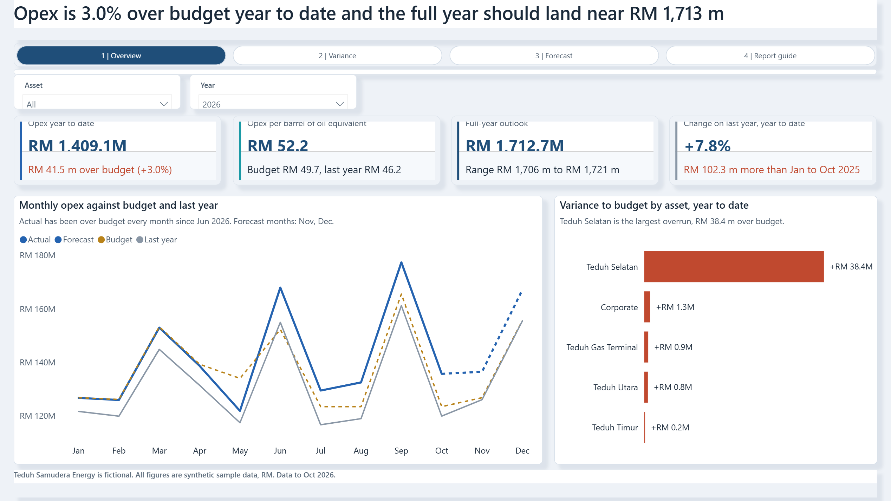
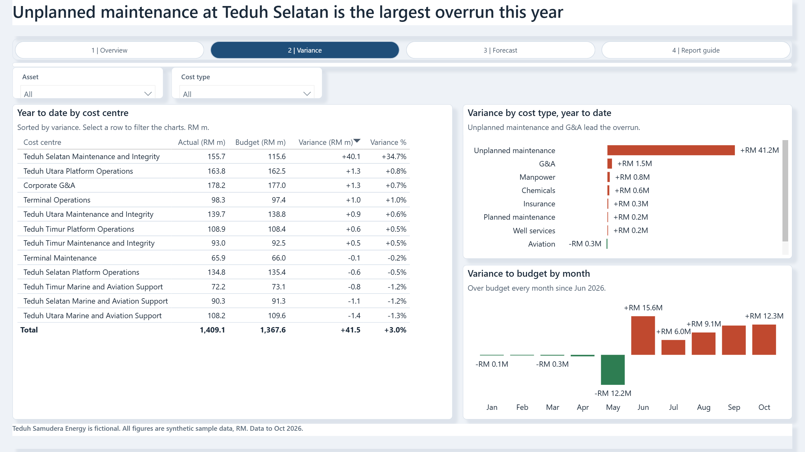
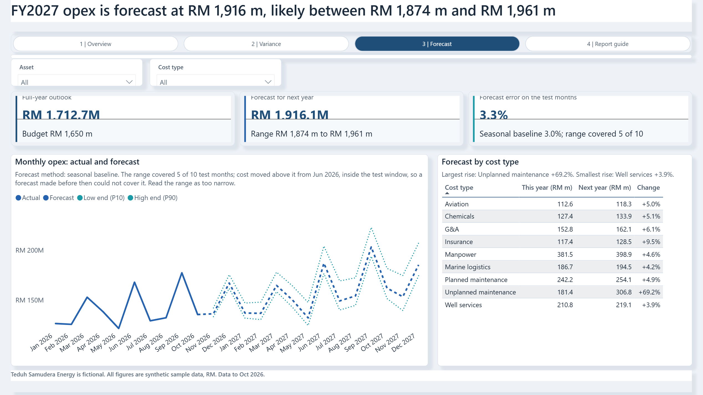
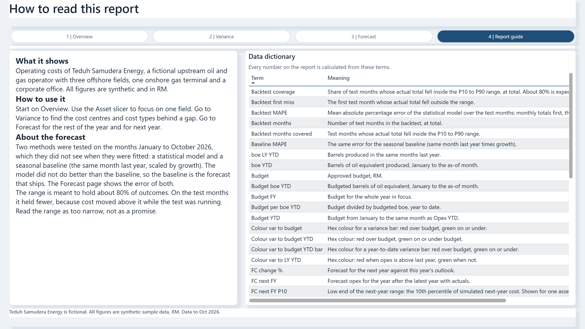

Opex variance and forecast pack
Rebuild a four-page Power BI report that tells a finance leader whether opex is on budget, which cost centre explains the gap, and what next year looks like, with a forecast that was tested before it was believed.
The company is fictional and all data is synthetic. Teduh Samudera Energy, five assets, twelve cost centres, January 2024 to October 2026. The report is source files you open in Power BI Desktop; there is no live link.
Source on GitHub · Download ZIP
Get the code and see what is in it
Everything you need is in one repository. Download it, unzip it, and keep the folder path short: Power BI Desktop and Windows both dislike long paths.
Download the repository (ZIP), or clone it:
git clone https://github.com/BIVenture2025/teduh-samudera-opex-pack-pbi.git cd teduh-samudera-opex-pack-pbi pip install numpy pandas statsmodels
| Folder | What is in it |
|---|---|
data/ | The seeded generator (generate_data.py) and the frozen control totals |
analytics/ | The forecast and backtest (forecast.py) and the paired test (stats_check_paired.py) |
generator/ | The model generator (TMDL), the report generator (PBIR), the layout plan, the theme and the PBIR helper library |
report/ | P35_OpexPack.pbip, the semantic model and the report, exactly as generated |
docs/ | This guide, the brief, the design guide, the build record and results |
Generate the sample data
Teduh Samudera is an imaginary upstream operator with five assets (three offshore fields, a gas terminal and a corporate centre), twelve cost centres and nine cost types. The generator writes monthly actuals from January 2024 to October 2026, a budget to December 2026, and production in barrels of oil equivalent.
python data/generate_data.py
It writes six CSVs into data/, prints the headline totals and writes data/control_totals.json. The committed copy of that file is the frozen reference: yours should be identical (git diff shows nothing). The number to look for is year-to-date
2026 actual opex of RM 1,409,076,074 against a budget of RM 1,367,575,287.
Same seed, same bytes
Run the forecast and the backtest
The forecast covers November 2026 to December 2027 for every asset and cost type that has actuals (47 slices). It is a damped-trend exponential smoothing model with monthly seasonality, with a range from 2,000 simulated paths. Next to it sits a plain seasonal baseline: the same month last year times the growth so far this year.
python analytics/forecast.py --data data --out analytics
It writes fc_point.csv (448 rows), fc_quantile.csv, backtest.csv and backtest_summary.json.
The backtest pretends it is December 2025 and scores the ten months January to October 2026. It runs in about ten seconds, and a clean re-run from this repository reproduced backtest_summary.json exactly, file hashes included.
NO_DIFFERENCE_SHOWN, and the baseline is the forecast on page 3.Quantiles are never added across slices
Why the residuals are scaled by the square root of the horizon
Open the report and point it at your data
The semantic model is an import model: it reads the CSVs from a folder. That folder is a parameter, so one edit moves the whole report to your machine.
- Open
report/P35_OpexPack.pbipin Power BI Desktop. - Home → Transform data → Edit parameters. Set
DataFolderto the folder you cloned, for exampleC:\Work\teduh-samudera-opex-pack-pbi. No trailing slash. - Close and apply, then Refresh. Pages 1 to 3 fill with data.

The path in the file is a placeholder
expressions.tmdl ships with C:\path\to\teduh-samudera-opex-pack-pbi so no machine path is published. A refresh before you set the parameter fails with a message about a missing file; setting the parameter is the whole fix.Read the three pages
Each page has one job and one sentence as its title.

On the variance page the month chart shows the shape of the problem: roughly on budget until May, a one-off RM 12.2 m under in May, then over budget every month from June. The May dip reflects the planted timing difference (a shutdown budgeted in May and carried out in June), so read May and June together.

The fourth page is the report's own guide and a data dictionary, so a reader who lands there from a link can decode every measure.

Rebuild the files from code (optional)
The report/ folder is generated, not hand-drawn. If you want to change the model or the layout, change the generator and regenerate, so the
files and the code never drift apart.
# 1. set DATA_FOLDER at the top of generator/build_model.py to your clone, then: python generator/build_model.py out python generator/build_report.py generator/plan_live_v1.json generator/CFPA_Executive_Theme.json generator out
The first command writes out/P35_OpexPack.SemanticModel. The second writes out/P35_OpexPack.Report, with every visual placed from the layout plan
generator/plan_live_v1.json and the theme applied. Put the .pbip file beside them to open the result.
Where the layout comes from
plan_live_v1.json, a list of visuals with position, size and order per page. The report generator places each visual 1:1 from that file. This was a pilot of canvas-to-PBIR layout: the canvas, plan and read-back worked, but the edit-by-hand half of the loop was never run, so that part is unproven.Check it
Do not trust a report because it looks right. These are the checks the build passed, and how to repeat the two that matter most.
- Regenerates identically. Running both generators from the repository rebuilds the semantic model and the report files exactly as shipped.
- Control total. The model's year-to-date 2026 actual equals
actual_ytd_2026indata/control_totals.json: RM 1,409,076,074. - No orphan keys. All 16 relationships have a dimension row for every fact row (16 of 16 clean).
- Structure. 38 of 38 visuals validate; the official
powerbi-report-authorcommand-line validator reports 0 errors; an accessibility and contrast inspector reports 0 errors. - Model rules. A best-practice analyzer reports 47 findings, every one "provide a format string" on a text measure. No other rule fired.
- Seen, not assumed. Every page was captured in Desktop and the figures were read against the model.
The traps table
What the author learned and a reader would otherwise find out the hard way.
| Trap | What happens | Fix |
|---|---|---|
| CALCULATE filter names a measure, or columns from two tables | The boolean filter is rejected or silently wrong | Hold the value in a VAR first, then filter on the variable |
ISFILTERED for a slicer test | It stays false when the filter arrives from another table, so the visual does not react | Use ISCROSSFILTERED for slice logic |
| Dates stored as text | Comparisons on a text date broke on December | Compare text dates with STARTSWITH on the year-month |
| One colour per bar | A single series paints every bar one colour | Per-category colour needs the data-point selector with the wildcard matching option, not a series colour |
| Contrast on a hover state | The accessibility inspector flags the navigation hover text as low contrast | Override the hover font colour in the generator, not in the shared kit |
| Reopened project shows no data | Every visual reads empty | Refresh after opening, then wait about 15 seconds |
| CRLF in TMDL | A model written with LF line endings can fail to load | Write .tmdl files with CRLF; the generator does |
Known limits
Smaller deviations from the design: the error band is two dotted lines (P10 and P90) instead of a shaded band; a legend replaces series-end labels; there is no vertical as-of marker; the variance column in the matrix has no conditional colour; the data dictionary's Meaning column clips long text; there are 47 forecast slices where the design planned 60.
What this does not do
No write-back, no live source (the data is imported from CSV files in a folder), no row-level security, no refresh schedule and no Fabric item. There is no publish-to-web link: it is delivered as PBIP source files.